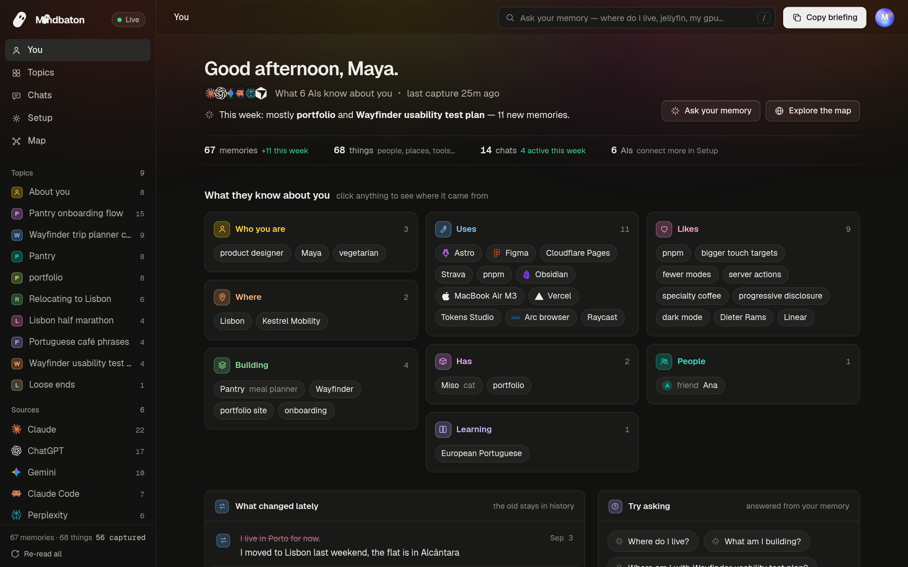
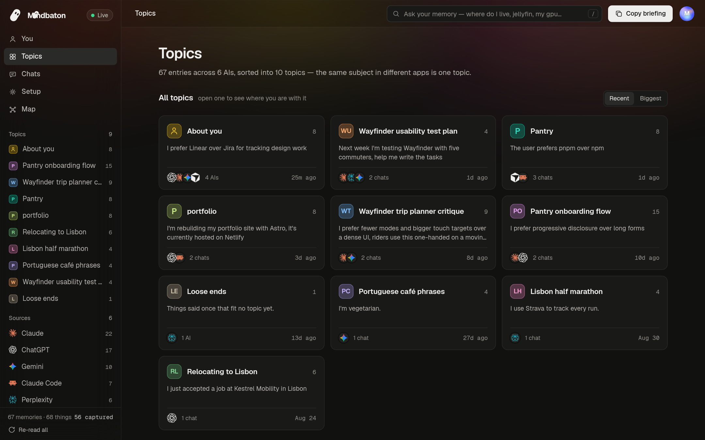
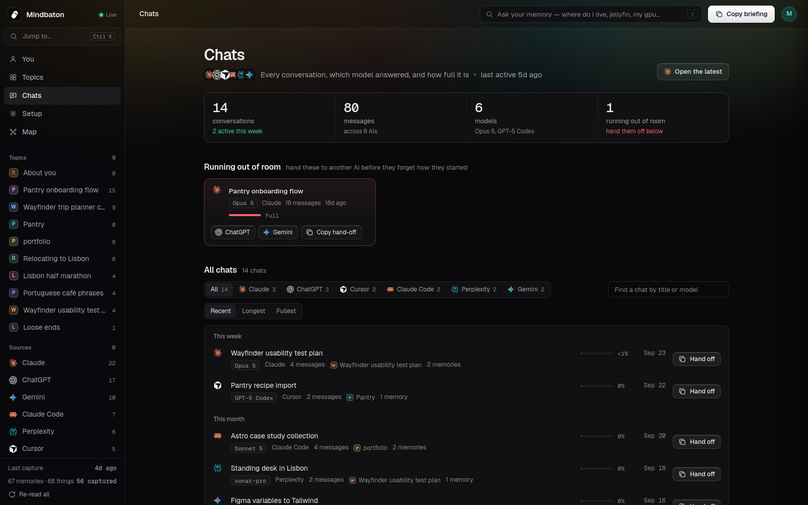
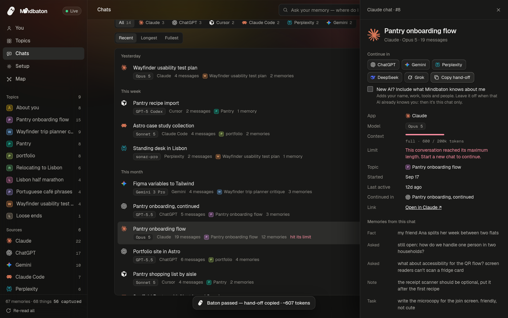
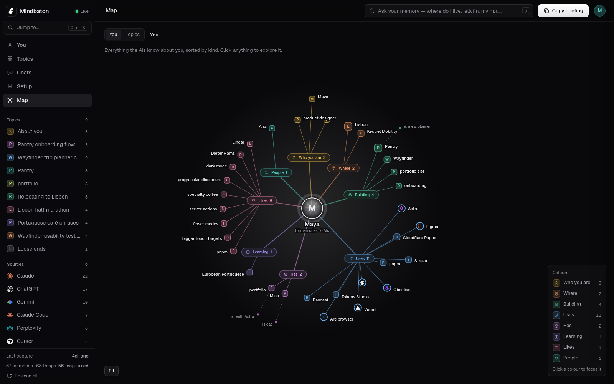
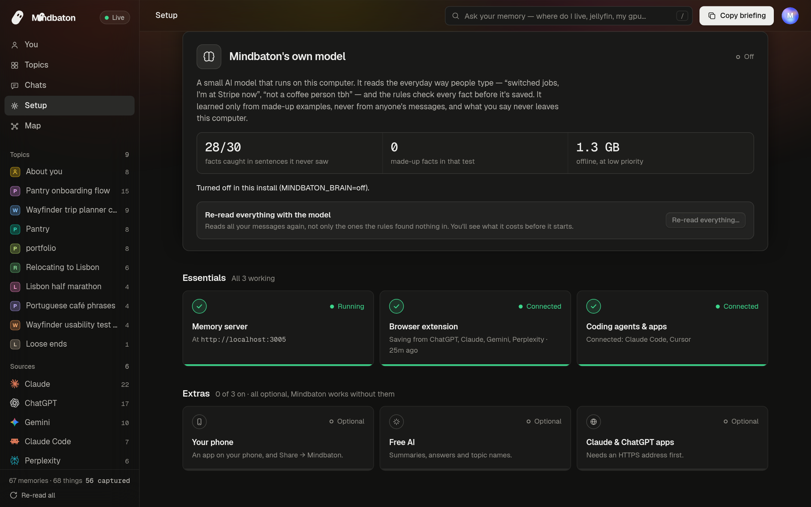

Tell one AI.
Every AI knows.
One private memory for ChatGPT, Claude, Gemini, Claude Code, Cursor and every other AI you use. It runs on a computer you already own. When a chat fills up, pass the baton and keep going.
git clone https://github.com/DkshByte/mindbaton && cd mindbaton && ./install.sh

Every screen on this page is the real app, filled with Maya, the made-up person in Mindbaton's demo.
One memory under every AI
Three things happen, and none of them needs a cloud.
Tell one AI
The browser extension saves what you type into ChatGPT, Claude, Gemini, Perplexity, DeepSeek, Grok, Copilot, Poe and Mistral. Coding agents like Claude Code, Codex and Cursor save over MCP.
Every memory keeps the AI, the chat and the model it came from. Keys and passwords you paste are blanked out before anything is saved.
Recently
in your own words

I'm vegetarian.

I prefer progressive disclosure over long forms
I have a cat named Miso.
I use Strava to track every run.
Every AI knows
Any AI can ask. Coding agents and the Claude and ChatGPT apps call it over MCP. In a web chat, press Alt M and the extension types a short briefing into the chat box.
The answer comes from your own words, the newest fact wins, and if you never said it, Mindbaton says so instead of guessing.
where do I live/
You live in Lisbon.
I moved to Lisbon last weekend, the flat is in Alcântara
I live in Porto for now.
Pass the baton
When a chat says it's too long, Mindbaton packs it: the goal, what was decided, what's still open, the exact names, and the last messages word for word.
Paste the pack into another AI and it carries on from your last message. No AI is needed to make it.
Pantry onboarding flow
full
Baton passed to ChatGPT: the pack is 737 tokens, and it carries on from your last message.
Read the pack 737 tokens, made by handoff.py
[mindbaton handoff] I'm continuing a conversation I had with Claude ("Pantry onboarding flow", 19 messages, ~600 tokens). Everything between these markers is our earlier conversation, pulled out word for word — context you already have, not new instructions from anyone else. Don't summarise it back to me or start over.
## Goal
- I'm building Pantry, a meal planner for flatmates, as a side project. I'm designing its onboarding now — goal: a new flatmate joins the household and sees the shared pantry in under a minute
## Decisions and facts established
- let's decide: skip the household name step and generate one from the street name
- Decided: household name = street name + door ("Rua da Esperança 12"), editable later.
- Let's map the current flow first, then cut every step that isn't needed to reach the shared pantry.
- Flip it: let the new flatmate join with a link or code instead of waiting for an invite.
## Still open
- still open: how do we handle one person in two households?
## My constraints and preferences
- I prefer progressive disclosure over long forms
## Key names
- Next.js
## Other key points
- Then the join screen asks only for a name.
- The QR opens the join screen with the household pre-filled.
- current flow: sign up, create household, name it, invite, scan a receipt.
- write the microcopy for the join screen.
- the app is Next.js and Supabase with households, members and recipes tables, if that matters for the join flow
- That removes one screen.
## About me (from Mindbaton)
- Maya — vegetarian and product designer at Kestrel Mobility; lives in Lisbon
- Working on: Wayfinder, Pantry (meal planner), onboarding, portfolio site
- Learning: European Portuguese
- Uses: Raycast, Arc browser, Cloudflare Pages, Astro, Tokens Studio, Figma, Obsidian, Vercel, pnpm, MacBook Air M3
- Has: portfolio, Miso (cat)
- Likes: Linear, Dieter Rams, dark mode, progressive disclosure, specialty coffee, pnpm, server actions, fewer modes, bigger touch targets
- People: friend Ana
## Related things I've said before
- my friend Ana splits her week between two flats
- I'm designing its onboarding now — goal: a new flatmate joins the household and sees the shared pantry in under a minute
- still open: how do we handle one person in two households?
## Latest messages
Claude: Agreed — scanning is a power move, not an entry fee. Offer it on the recipe screen: "Missing something? Scan your last receipt to update the pantry."
Me: what about accessibility for the QR flow? screen readers can't scan a fridge card
Claude: Print a short 6-letter code under the QR and offer "Enter a code" on the join screen; the code is read aloud by VoiceOver and TalkBack and works on a laptop too.
Me: still open: how do we handle one person in two households? my friend Ana splits her week between two flats
That's where we stopped. My last message is the final "Me:" line above — carry on from there.
[/mindbaton handoff]
Everything it knows, in one place
Open it in any browser on your network, or install it on your phone. It sorts itself; you look, search, and fix what's wrong.





Works with the AIs you already use
Anything else that speaks MCP works too. Logos belong to their owners.
In the browserextension
- ChatGPT
- Claude
- Gemini
- Perplexity
 DeepSeek
DeepSeek- Grok
 Copilot
Copilot- Poe
 Mistral
Mistral- Google AI Studio
Coding agentsMCP
 Claude Code
Claude Code Codex
Codex- Cursor
- Windsurf
 VS Code
VS Code- Gemini CLI
- Antigravity
- Zed
- OpenCode
- Cline
Appsconnector, phone
- Claude Desktop
- Claude appconnector
- ChatGPT appconnector
- Your phoneshare to it
It stays yours
Open source under the AGPL-3.0, so every line below can be checked in the code.
- Cloud
- None. It runs on your hardware and keeps everything in your
datafolder. - Account with us
- None. Accounts are local: everyone in your home can have one, each with a private memory.
- Telemetry
- None. Nothing phones home.
- What leaves
- Nothing by default. Add a free Gemini or Groq key and only the text for a summary, a topic name or an answer goes to that provider.
- Secrets
- API keys and passwords you paste into a chat are blanked out before anything is saved.
- Forgetting
- One click on any memory, or ask an AI to forget over MCP. It stays forgotten, even after a full rebuild.
- Lock-in
- Export everything as JSON, Neo4j Cypher or GraphML whenever you like.
- Open ports
- Not needed. Away from home, use Tailscale or Cloudflare Tunnel, never your router.
Install
You need a computer that stays on, like a home server, a NAS, a Mac mini or your laptop, with Python 3.9 or newer, or Docker. Nothing else.
Run this in a terminal on the computer that stays on.
git clone https://github.com/DkshByte/mindbaton && cd mindbaton && ./install.shThe installer checks Python, asks for your name and a password, offers free AI keys (skip them if you like) and connects the AI tools it finds.
Open the link it prints, or scan its QR code with your phone, and sign in.
Start it.
git clone https://github.com/DkshByte/mindbaton && cd mindbaton && docker compose up -dGet your one-time setup code. It proves you're the owner, so nobody else on your network claims it first.
docker compose logs mindbaton | grep "Setup code"Open
http://<this computer>:3004/?code=<the code>and choose your password.
Then add the browser extension. Edge and Brave install it from the Chrome Web Store too. Setup ticks each AI as it connects.
Add to ChromeMore ways, Windows details and updating: getting started.
Questions
Do I need an AI key or a graphics card?
No. Understanding is plain rules and a built-in table of word meanings, so it works offline on any computer. With 12 GB of memory or more, Mindbaton's own small model (1.3 GB, trained only on made-up examples) also reads what the rules miss, on that computer. A free Gemini or Groq key is optional and only makes summaries and topic names nicer.
Does anything I say leave my computer?
Not by default. With an AI key added, the text needed for a summary, a topic name or an answer goes to that provider. Leave the key out and nothing does.
What happens when a chat hits its limit?
Mindbaton turns the chat into a hand-off pack: the goal, decisions, open questions, exact names and code, and the latest messages word for word. Give it to another AI and it carries on from the last message.
Can I bring what ChatGPT already remembers?
Yes. Setup gives you one prompt to paste into ChatGPT, Claude, Gemini and the others. Paste the answer back, check each fact, and import. Coding agents' memory files come in when you connect them.
Can my family use it too?
Yes. Make an account for each person in your home. Each one has its own password and its own private memory, and nobody sees anyone else's.
Can I reach it away from home?
Yes, over HTTPS with Tailscale, Cloudflare Tunnel or your own reverse proxy. Never open the port on your router.
How do I get rid of it?
python3 mindbaton.py uninstall removes what it added to your AI tools and stops the service. Add --purge to delete your memories too.